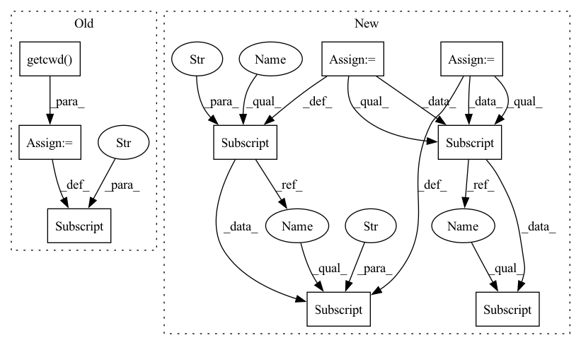

Pattern ID :34287

Before Change
def _build_path_config(self):
path_config_dict = {}
dir=os.path.dirname(os.path.realpath(__file__))
root=os.getcwd()
path_config_dict["root"]=root
model_name = self.config_dict["model"]
dataset_name = self.config_dict["dataset"]
if model_name == None:
After Change
"../properties/dataset/{}.json".format(dataset_name))
path_config_dict["dataset_dir"] = "dataset/{}".format(dataset_name)
path_config_dict["checkpoint_file"] = "checkpoint/" + "{}-{}.pth".format(model_name, dataset_name)
path_config_dict["trained_model_dir"] = "trained_model/" + "{}-{}".format(model_name, dataset_name)
path_config_dict["log_file"] = "log/" + "{}-{}.log".format(model_name, dataset_name)
path_config_dict["output_dir"] = "result/{}-{}".format(model_name,dataset_name)
path_config_dict["checkpoint_dir"] = "checkpoint/" + "{}-{}".format(model_name, dataset_name)
self.path_config_dict = path_config_dict
In pattern: SUPERPATTERN
Frequency: 3
Non-data size: 9
Instances
Fragment ID: 98266633
Project Name: lyh-yf/mwptoolkit
Commit Name: 5bd2c2734c80f88c3144c7975750f174e39120e2
Time: 2022-04-08
Author: yifan2250@gmail.com
File Name: mwptoolkit/config/configuration.py
M Class Name: Config
N Class Name: Config
M Method Name: _build_path_config(1)
N Method Name: _build_path_config(1)
M Parent Class: object
N Parent Class: object
M File Name: mwptoolkit/config/configuration.py
N File Name: mwptoolkit/config/configuration.py
M Start Line: 219
M End Line: 222
N Start Line: 222
N End Line: 255
'>
Before Change
def _build_path_config(self):
path_config_dict = {}
dir=os.path.dirname(os.path.realpath(__file__))
root=os.getcwd()
path_config_dict["root"]=root
model_name = self.config_dict["model"]
dataset_name = self.config_dict["dataset"]
if model_name == None:
After Change
dataset_name))
path_config_dict["dataset_config_file"] = os.path.join(dir,
"../properties/dataset/{}.json".format(dataset_name))
path_config_dict["dataset_dir"] = "dataset/{}".format(dataset_name)
path_config_dict["checkpoint_file"] = "checkpoint/" + "{}-{}.pth".format(model_name, dataset_name)
path_config_dict["trained_model_dir"] = "trained_model/" + "{}-{}".format(model_name, dataset_name)
path_config_dict["log_file"] = "log/" + "{}-{}.log".format(model_name, dataset_name)
path_config_dict["output_dir"] = "result/{}-{}".format(model_name,dataset_name)
path_config_dict["checkpoint_dir"] = "checkpoint/" + "{}-{}".format(model_name, dataset_name)
self.path_config_dict = path_config_dict
'>
Fragment ID: 98266616
Project Name: lyh-yf/mwptoolkit
Commit Name: 5bd2c2734c80f88c3144c7975750f174e39120e2
Time: 2022-04-08
Author: yifan2250@gmail.com
File Name: mwptoolkit/config/configuration.py
M Class Name: Config
N Class Name: Config
M Method Name: _build_path_config(1)
N Method Name: _build_path_config(1)
M Parent Class: object
N Parent Class: object
M File Name: mwptoolkit/config/configuration.py
N File Name: mwptoolkit/config/configuration.py
M Start Line: 219
M End Line: 222
N Start Line: 222
N End Line: 255
'>
Before Change
data_config["batch_size"] = batch_size
data_config["val_size"] = 0.2
data_config["CACHEDATA"] = True
data_config["data_path"] = os.path.join(os.getcwd(), "data.csv")
data_config["inputs"] = ["tmin", "tmax", "slr", "WTEMP(C)", "FLOW_OUTcms", "SED_OUTtons", "NO3_OUTkg"]
After Change
_nn_config["lr"] = 0.0001
_nn_config["optimizer"] = "adam"
_nn_config["loss"] = "mse"
_nn_config["epochs"] = 10
_nn_config["min_val_loss"] = 9999
_nn_config["patience"] = 15
_nn_config["subsequences"] = 3 // used for cnn_lst structure
_nn_config["lstm_config"] = {"lstm_units": 64,
"lstm_act": "relu",
"dropout": 0.4,
"rec_dropout": 0.5,
}
_nn_config["cnn_config"] = {"filters": 64,
"kernel_size": 2,
"activation": "LeakyRelu",
"max_pool_size": 2}
_nn_config["HARHN_config"] = {"n_conv_lyrs": 3,
"enc_units": 64,
"dec_units": 64}
_data_config = dict()
_data_config["lookback"] = 15
_data_config["batch_size"] = 32
_data_config["val_fraction"] = 0.2
_data_config["CACHEDATA"] = True
// data_config["inputs"] = ["tmin", "tmax", "slr", "WTEMP(C)", "FLOW_OUTcms", "SED_OUTtons", "NO3_OUTkg"]
// data_config["outputs"] = ["obs_chla"]
_data_config["inputs"] = ["cum oprtv time", "1st yoib ablyag", "2nd nongchog ablyag", "2nd nongchogsu yolyang",
"ondo"]
_data_config["outputs"] = ["FLUX SFX"]
for key, val in kwargs.items():
if key in _data_config:
_data_config[key] = val
if key in _nn_config:
_nn_config[key] = val
_total_intervals = (
(0, 146,),
'>
Fragment ID: 98266622
Project Name: atrcheema/ai4water
Commit Name: 1a746afcc453d674d591e5d76b5fbbe90e606a66
Time: 2020-08-10
Author: ather_abbas786@yahoo.com
File Name: run_model.py
M Class Name: AnonimousClass
N Class Name: AnonimousClass
M Method Name: make_model(0)
N Method Name: make_model(9)
M Parent Class:
N Parent Class:
M File Name: run_model.py
N File Name: run_model.py
M Start Line: 9
M End Line: 89
N Start Line: 14
N End Line: 96